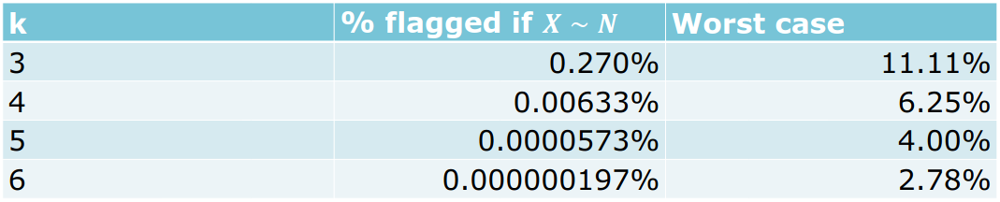
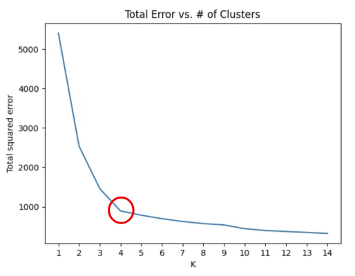
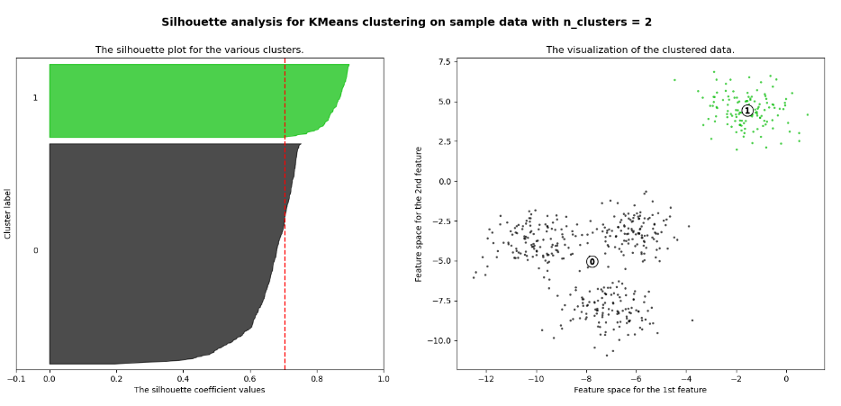

Data Quality - Notes
Lecture 01: Introduction
Relevance of Data Quality
A key advance in data quality emerged in the 1920s through R. A. Fisher’s work in experimental design, which introduced randomization and replication to estimate error, bias, and precision.
Definitions
Data
Data are abstract representations of selected features of real-world entities, events, and concepts, expressed and understood through clearly definable conventions (Sebastian-Coleman, 2013).
Data Quality
- Contextual data quality: The quality of data is defined by two related factors: how well it meets the expectations of data consumers (how well it is able to serve the purposes of its intended use).
- Intrinsic data quality: How well it represents the objects, events, and concepts it is created to represent.
Data Management
DQ as part of Data Management
Data Governance sits at the center (the hub) because it provides oversight, direction, policies, and coordination. Data quality is but one element of effective data management.

Role of Data Quality Managers
- Develop a governed approach to make data fit for purpose based on data consumers requirements.
- Define standards, requirements, and specifications for data quality controls as part of the data lifecycle.
- Define and implement processes to measure, monitor, and report on data quality levels.
- Identify and advocate for opportunities to improve the quality of data, through process and system improvements.
Data Quality Dimensions
- Correctness/accuracy: The data accurately describe the entity in question
- Completeness: No missing records/field values
- Conformity/validity: Correct types, value ranges, etc.
- Consistency: No contradictions between different data sets / tables
Note: Breaking the issue down into dimensions helps to quantify issues.
Most sources agree that the concept of data quality has several dimensions. But they don’t agree on what these dimensions are.
Lecutre 02: Data Quality Dimensions
In order to measure a broad concept such as data quality, it needs to be broken down into measurable, actionable dimensions. Each dimension captures one measurable aspect of data quality. Measuring data quality serves to analyze/understand/resolve or minimize data quality problems.
Note: Some of the dimensions are objective/quantitative or subjective/qualitative.
Classification of Dimensions
Objective vs. subjective measurement
- Objective: Verifiable by rules, counts, constraints, timestamps, or comparisons. Independent of user perception.
- Subjective: Depends on human judgment, expectations, or context of use.
Data value (intrinsic) vs. usage-dependent (contextual)
- Data value: Intrinsic quality of the dataset itself. Affects correctness, analytical validity, and downstream results even if usage is unknown. E.g. completeness, consistency
- Usage: Quality emerges only in interaction with users, systems, or tasks. Context-dependent.
Popular Dimensions
Quantitative and intrinsic dimensions
- Completeness: No missing records/field values
- Correctness/accuracy: The data accurately describe the entity in question
- Conformance/validity: Correct types, value ranges, etc.
Quantitative and contextual dimension
- Consistency: No contradictions between different data sets / tables
- Currency: the data are up to date
Completeness
Completeness is the most fundamental dimension. It simply measures whether data are present or absent. Analysis may be limited to critical/mandatory attributes. Measurement:
- at the field level (per column)
- at the record level (how many rows have any missing fields)
- at the table level (how many records are missing)
Note: The completeness can be calculated as a percentage at the field, record and table levels.
Not all missingness indicates a data quality problem. To record (and therefore measure) qualified missingness in a database, one can use special sentinel values (e.g., -9999 for numeric attributes, NA for text attributes)
Correctness/accuracy
It measures the extent to which data are the true representation of reality. Measurement:
- at the field
- at record level
Conformance / Validity
Conformity (or validity) means compliance of the data with a set of standards, e.g., in terms of:
- Type (“Name” is a string; “Number of children” is an integer)
- Range (“Contractual work hours” is between 0 and 50)
- Format (“Date” in ISO format YYYY-MM-DD, “Email” me{at}example.com)
- Value from a reference list (“CH”, “DE”, …)
Note: But even fully conformant data can be 100% inaccurate.
Role of Representation
Besides conformance/validity, another prerequisite of correctness/accuracy is correct representation.
- December 13, 1941 -> invalid
- 1941-13-12 -> valid entry, but wrong representation
- 1941-12-13 -> valid, correct representation correct/ accurate (provided the information is intrinsically accurate)
Role of Metadata
Metadata are data about data. Without metadata, it can be difficult to make sense of data. High quality metadata is important for representational effectiveness. Standard database metadata includes:
- Table/ column names and definitions
- Data types and domains of values
- Whether columns can have NULL values
- Rules regarding data relationships
- Cardinality (Number of unique values compared to the total rows, e.g. gender, boolean flags)
Lecture 03: Exploratory Data Analysis
Data Preparation
The process of manipulating data before analysis is referred to as data preparation. The meaning of the term data preparation depends on Point of view, Roles, Intended data use.
Point of view
The meaning of data preparation varies depending on one’s position in the hierarchy.
Note: We take a statistical view and focus on the EXPLORE/TRANSFORM level.
Role and intended data use

From Data to Understanding
The process from data to understanding is often described to as a cycle
“Data Wrangling is the ability to take a messy, unrefined source of data and wrangle it into something useful. It’s the art of using computer programming to extract raw data and creating clear and actionable bits of information for your analysis. Data wrangling is the entire front end of the analytic process and requires numerous tasks that can be categorized within the get, clean, and transform components.” (Bradley Boehmke)

Exploratory Data Analysis (EDA)
Always plot your data first.
Raw Approach:
- Examine the data before applying a specific probability model
- Focus on descriptive analysis over hypothesis testing
- Methods of graphical data analysis
Iterative cycle:
- Generate questions about your data.
- Search for answers by transforming, visualizing, and modeling your data.
Steps in the EDA Process
Identify data attributes. Determine measurement scales

Univariate data analysis. Recognize basic properties of the data (e.g. boxplot)
Goal: Recognize basic properties of the data.
Description of central tendency:
- Arithmetic mean → Very sensitive to outliers
- Median → Splits data in half (25% smaller, 75% larger) → More robust to outliers than mean
Description of variability/ dispersion:
- Empirical variance
- Empirical standard deviation
- 1st quartile/ 25th percentile → 25% smaller, 75% larger.
- 3rd quartile/ 75th percentile → 75% smaller, 25% larger.
- Interquartile range (IQR) = 3rd quartile – 1st quartile → More robust than standard deviation
Bivariate & Multivariate data analysis. Recognize interactions in the data
Goal: Using bivariate & multivariate data analysis to recognize interactions in the data by using Plots and hypothesis tests.
Typical graphical procedures: - Scatterplot - Mosaic Plot
Typical tests: - Pearson Chi-Square test
Following EDA steps
- Detect aberrant & missing values. Analysis & adjustment
- Outlier detection. Analysis & cleaning
- Create derived variables (index, etc.) & Variable transformation
Lecture 04: Missing Values
Why do we care about missing data?
Naively, one might think that missing data just means there is less data to analyze, so long as there are enough data to begin with. Unfortunately, this is only true in rare circumstances. In many cases, missing data may actually bias the results (give systematically wrong answers).
Note: Missing data is the rule, not the exception.
Reasons for missing data
At the source
- Survey respondents refuse to answer certain questions
- Answers are invalid or cannot be decoded – for example, in paper questionnaires.
- In longitudinal studies, parts of the sample do not participate at all measurement time points
- Sensor failure
Causes during data processing
- typing errors during coding
- Reading errors in digitalizing (for example, scanning of paper questionnaires)
Note: The more technical reasons are often the most benign, because they may occur randomly and therefore don’t lead to bias.
Forms of non-response
- Unit non-response: subjects refuse to participate or are systematically unreachable
- Item non-response: subjects refuse to answer specific questions
Forms of item non-response (Little and Rubin, 2020)

Missing data mechanism
The missing data mechanism describes the underlying process that led to the missing data. It is crucial for determining which methods are adequate for dealing with the problem, if any.
Missing Completely at Random (MCAR)
The probability of a value being missing does not depend on any observed or missing data. I.e., missing values are completely randomly distributed across all cases (persons, etc.) Cases with missing values do not differ systematically from cases without missing values.
Missing at Random (MAR)
The probability of a value being missing may depend on observed data, but not on missing data. The occurrence of a missing value occurs conditionally at random and can be explained by the values in other variables. Cases with missing values may differ systematically from cases without missing values, but in a way that can be modeled.
Missing not at Random (MNAR)
The probability of a value being missing depends on missing data. Values are systematically missing but no information is available to model their absence. There is no adequate statistical procedure to avoid bias.
Dealing with Missing Data
Listwise deletion / Complete case analysis
Delete all rows that have a missing value. Advantage: simple. Disadvantages: Wasteful. Imagine a dataset with 10 attributes, each with 10% missings. Then P\text{(complete row)} = 0.9^{10} = 35\%.
Pairwise deletion / Complete case analysis
Delete all rows that have a missing value. Advantage: simple & less wasteful. Results in different sample sizes for different model.
Single Imputation
Generally, imputation refers to the practice of replacing missing values with values constructed in some way. Specifically, single imputation means that each missing value is replaced by one value.
Mean Imputation
NAs are replaced by the mean of each variable. Advantages: Simple. Disadvantages: Not unbiased for regression or correlation.
Regression Imputation
For each target variable to be imputed, run a regression on some or all other variables and use it to predict the missing values. Advantages: Under MCAR and MAR, unbiased for regression. Disadvantages: Not unbiased for correlation.
Stochastic Imputation
For each target variable to be imputed, randomly draw a value from some distribution. Advantages: Under MCAR and MAR, unbiased even for correlation. Disadvantages: Standard errors too small.
Overview of Imputation Methods

Multiple Imputation
In multiple imputation, instead of applying stochastic imputation once, it is applied m times (e.g., m=5). This creates 5 complete datasets. The data sets are analyzed separately, and the results are combined (pooled) according to certain rules. Advantages: Only method that can yield correct standard errors, even under MAR. Disadvantages: Still cannot handle MNAR (nothing can, only more data).
Note: In ML, we’re often not interested in standard errors.
Little’s MCAR Test
It essentially tests if the means / covariances are the same under each missingness pattern.
- H_0: The data are MCAR
- H_A: They are not
The test has low power: even if the test doesn’t reject, MCAR is not guaranteed.
Lecture 05: Univariate Outlier Detection
Anomaly detection generally refers to the process of automatically detecting events or behaviors which deviate from those considered normal. Outlier detection aims at identifying unusual objects in a database, i.e., different than the majority of the data and therefore suspicious resulting from a contamination, error, or fraud.
Outliers
- Data error (e.g., during data entry or transmission) -> remove to avoid bias, or use robust methods (e.g., median in place of mean).
- Not an error: in this case outliers may be the most interesting data points -> keep. Robust methods can still be useful depending on context. It may even be preferable to model the outliers explicitly (e.g., as a separate category)
Paradigms
Supervised Outlier Detection
The data set is fully labeled; each datapoint is labeled as either normal or abnormal. OD problem boils down to classification (with pronounced class imbalance). Rare, as labeling (by a domain expert) is expensive.
Semi-Supervised Outlier Detection
Only (or mostly) normal observations are labeled. Goal to to learn the distribution from the normal observations; outliers will be detected by deviating from that distribution.
Unsupervised Outlier Detection
The data set is unlabeled; it is not known if an observation is normal or abnormal. OD tries to identify outliers based on their dissimilarity to ”typical” observations.
Note: Much more common scenario.
Parametric
A specific distribution (e.g., Gaussian) is assumed and only its parameters (e.g., mean and variance) are estimated from the data.
- Advantage: efficient (less data needed) if parametric assumption is correct.
- Disadvantage: the assumption might be wrong.
Non-parametric
The entire distribution is learned from the data.
- Advantage: flexible; no distributional assumption needed.
- Disadvantage: needs more data.
Noise vs. Anomalies
Noise is a random or natural variability of a process. Example: Thermal noise of a measuring sensor. Typically does not produce unusual values. Anomalies are data points that significantly deviate from the expected behavior of the majority of the data.
Types of Outliers
- Global: A data point is considered a global outlier if it significantly deviates from the entire rest of the dataset.
- Local: A local outlier is a value that is unusual only when compared to its immediate neighborhood, even if it looks normal in a global context.
- Cluster: These are groups of data points that collectively deviate from the main pattern of the data, forming their own anomalous structure.
- Micro-Cluster: A micro-cluster consists of a very small, dense group of points that are isolated from the main clusters and treated as a collective anomaly.
Univariate Outlier Detection
Tukey’s Criterion
A value is considered an outlier if the value is more than 1.5 \times IQR outside of the Boxplot.
Percentile Method
he percentile method simply treats the most extreme observations on either side as (potential) outliers.
100 \times \dfrac{\alpha}{2}\%
Note: this will, by definition, mark \alpha% of the data as outliers, regardless of the distribution.
z-Score Method
The z-score methods treats any observation with abs |z_i| > k as an outlier, for some value of k.
z_i = \dfrac{x_i - \bar{x}}{S_x}
Below is a comparison showing the percentage flagged as outliers by the z-score method under normality and in the worst case.

Grubbs’ Test
Grubbs’ test is a statistical method used to detect a single outlier that follows an approximately normal distribution. The test identifies the largest absolute deviation from the sample mean and determines if that value is statistically significant compared to the rest of the data.
Hypotheses:
- H_0: The observation was drawn from the same distribution (not an outlier)
- H_A: The observation was drawn from a different distribution (outlier)
G = \max|z_i| = \dfrac{\max|x_i - \bar{x}|}{S_x}
Grubbs’ test can suffer from masking, where the presence of multiple outliers “hides” each other, making the test fail to detect any of them.
Rosner’s test
Rosner’s test can test a pre-specified number 𝑘 of extreme observations for whether they are outliers. It is a direct generalization of Grubbs’ test. It works by successively removing observations and applying Grubbs’ test again, adjusting the critical value to control Type I error.
Lecture 06: Multivariate Outlier Detection
Unlike univariate methods, multivariate approaches identify outliers based on deviations from the multi-dimensional distribution rather than extreme values in isolated attributes.
Notation
We need two subscripts to label data:
- i \in {1, \dots, N}: for labeling observations.
- i \in {1, \dots, N}: for labeling attributes.
Mahalanobis Distance
The Mahalanobis Distance is a sophisticated measure of the distance between a point and a distribution. Unlike the standard Euclidean distance, it accounts for the correlations between variables and the scale of the data.
\tilde{D}_i^2 = \sum_{j=1}^{p} z_{ij}^2
Cutoff Value
If the data follow a multivariate normal distribution, then the squared Mahalanobis distance D_i^2 = (x_i - \bar{x})^T \Sigma^{-1} (x_i - \bar{x}), is approximately x^2 distributed with p degrees of freedom.
Note: p equals the number of attributes.
This means that we can use the corresponding critical value as a cutoff to identify outliers. The Mahalanobis distance uses the ellipsoids as cutoffs to detect outliers.
k represents how many standard deviations away from the center you are looking
Introduction to Clustering
Clustering is an unsupervised machine learning technique. The Goal is to find structure in the data. The differences between the clusters are as large as possible, but the datapoints within a cluster are as similar as possible.
Not necessarily designed for outlier detection but can be used for it.
Euclidean Distance
Euclidean distance is the most common metric used to measure the straight-line distance between two points in a multi-dimensional space. In clustering, it serves as the “ruler” used to determine how similar or different data points are.
d(\mathbf{x}_1, \mathbf{x}_2) = \sqrt{\sum_{j=1}^{p} (x_{1j} - x_{2j})^2}
K-Means
K-means is probably the best-known clustering algorithm.
Note: k = number of clusters (to be specified a priori)
Given k and a set of points (x_1, \dots, x_N), each of which is a p-dimensional vector the objective is to find k so-called centroids (\mu_1, \dots, \mu_k) (also of dimension p) such that the average squared Euclidean distance between each point and its nearest centroid is minimal.
R(\mu_1, \dots, \mu_k) = \frac{1}{N} \sum_{i=1}^{n} \min_{j \in \{1, \dots, k\}} d(\mathbf{x}_i, \mu_j)^2
Lloyd’s Heuristic
Lloyd’s heuristic is what most people mean when they talk about the k-means algorithm.
Starting point: Choose k and k random datapoints as the initial centroid \mu_i. Iterate the following two steps until convergence (local optimum):
- Assign each datapoint to the closest centroid \mu_i.
- Compute new centroids \mu_i as the mean of all datapoints assigned to it.
In practice, the algorithm is used multiple times to compare results.
It is recommended to scale each variable to have standard deviation 1 (as in z-scores)
How many clusters?
One way to determine the number of clusters is a scree plot. The scree plot runs k-means for different choices of k and plots the objective function R(\mu_1, \dots, \mu_k) against k.

Outlier Detection using Clustering
Barai & Dey (2017) suggest a very simple way to use clustering for outlier detection: Simply consider the smallest cluster as a outlier.
Silhouette Plot
Silhouette coefficients of an observation measure the average distance from its own cluster compared to the average difference of the nearest cluster scaled to the interval [-1, 1]. A value close to 1 indicates an inlier that is well-separated from other clusters. Negative values may signal local outliers. An average silhouette coefficient of 0.5 signals good clustering (0.7 excellent)
A small cluster with a very high average silhouette coefficient may indicate a cluster of outliers (well separated from everything else).
